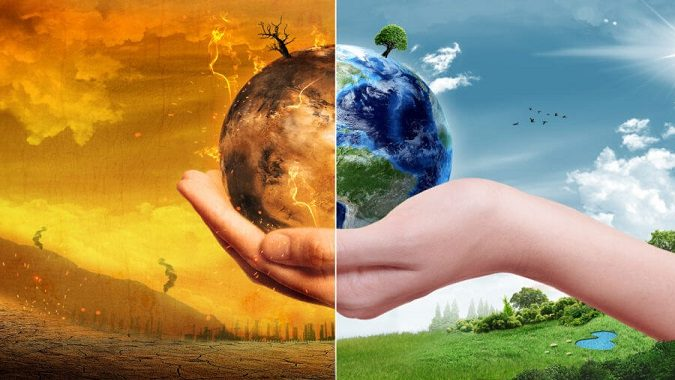

El ecosistema es el conjunto de especies de un área determinada que interactúan entre ellas y con su ambiente abiótico; mediante procesos como la depredación,
el parasitismo, la competencia y la simbiosis, y con su ambiente al desintegrarse y volver a ser parte del ciclo de energía y de nutrientes. Las especies del ecosistema,
incluyendo bacterias, hongos, plantas y animales dependen unas de otras. Las relaciones entre las especies y su medio, resultan en el flujo de materia y energía del ecosistema.
El significado del concepto de ecosistema ha evolucionado desde su origen. El término acuñado en los años 1930's, se adscribe a los botánicos ingleses Roy Clapham (1904-1990) y
Sir Arthur Tansley (1871-1955). En un principio se aplicó a unidades de diversas escalas espaciales, desde un pedazo de tronco degradado, un charco, una región o la biosfera entera del planeta,
siempre y cuando en ellas pudieran existir organismos, ambiente físico e interacciones.
Diversidades alfa, beta y gama
Robert Whittaker (1920-1980), ecólogo estadounidense investigador de la sucesión y de gradientes de vegetación, propuso tres medidas de diversidad de los ecosistemas: α, β, y γ. Alfa ( α )
es la diversidad dentro de un ecosistema que generalmente se describe como el número de especies. La diversidad beta (β) incluye la comparación de diferentes ecosistemas en gradientes ambientales,
por ejemplo, en una zona montañosa, en una zona costera. La diversidad beta nos indica que tan grande es el cambio de las especies de un ecosistema a otro. La diversidad gamma (γ) se refiere a la
diversidad total de una región, es decir a la diversidad geográfica. En ella se suman las diversidades alfa de varios ecosistemas.
Existen diversos tipos de ecosistema en el mundo, clasificados de acuerdo al ambiente en que tienen lugar.
Ecosistemas acuáticos
Representan el 75% de todos los ecosistemas existentes y tienen lugar bajo el agua. Eso significa mares, océanos, ríos, lagos y nichos submarinos profundos, como la zona abisal. Sus especies están
adaptadas física y bioquímicamente al entorno acuático, el cual en condiciones ideales no presenta demasiadas variaciones respecto a su temperatura y pH.
Entre los principales ecosistemas acuáticos tenemos:
Ecosistemas terrestres

Tienen lugar fuera del agua y sobre la superficie terrestre, lo cual implica también sus posibles variaciones de relieve (montañas, planicies, valles, desiertos, etc.), y que a su vez implican diferencias
importantes de temperatura, concentración de oxígeno y clima. La diversidad de especies presente en este conjunto de ecosistemas es enorme, con predominancia numérica de los insectos y luego las aves.
A grandes rasgos pueden resumirse en: ecosistemas de desierto, de páramo, de bosque, selva y sabana.
Entre los principales ecosistemas terrestres tenemos:
Ecosistemas mixtos
Son aquellos que combinan dos medios físicos, como el agua y la tierra (anfibio) o el aire y la tierra (aéreo). Los seres que habitan estos ecosistemas suelen desplazarse mayormente en uno de los dos,
pero requieren del otro para el reposo, alimentarse o incluso procrear, dependiendo del caso específico.
Entre los principales ecosistemas mixtos tenemos:
Ecosistemas microbianos
Se refiere a los diversos organismos microscópicos que, también, presentan relaciones recíprocas en su hábitat y resultan indispensables, a la larga, para el sostén de las formas más complejas de vida.
Entre los principales ecosistemas microbianos tenemos:
Impacto humano en los ecosistemas

El conocimiento ecológico es un área científica de suma importancia para la preservación y defensa de la biodiversidad del planeta, actualmente bajo ataque de las numerosas actividades industriales del hombre.
Estas actividades tienen un impacto directo sobre la energía y los materiales de cada ecosistema, y produce alteraciones en el delicado balance vital que los caracteriza.
Para más información haga clic:aquí
Volver a la página principal